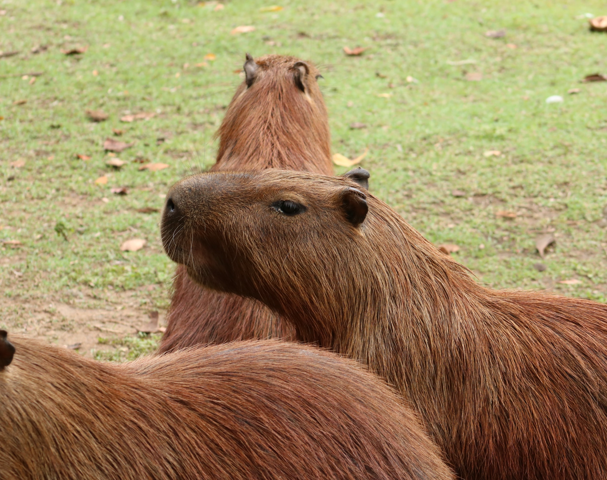

The quokka lives in swamps and scrublands, tunneling through the brush to create shelters and emerging at night to eat. When water is scarce, this little wallaby eats waterstoring succulents. Well-adapted to the unpredictable Australian environment, the quokka also has the ability to regulate its body temperature to cope with high heat. If vegetation is scarce, it climbs small trees to nibble on leaves, and it also has the ability to store fat in its short tail.

Sounds